DS1 de maths de l'année dernière — corrigé complet
DS1 de mathématiques d'A&M2 (11 octobre 2025) : 2 h, sur 20 points, ni document ni calculatrice. Au programme : analyse asymptotique (équivalents, DL, asymptotes), un exercice sur une suite définie implicitement (\(\tan x=x\)), et de l'algèbre linéaire (supplémentaires, projecteur, matrice d'un endomorphisme, changement de base). Structure : QCM (4 pts), restitution de cours (2 pts), 4 exercices (14 pts). Aucun corrigé officiel : tout est résolu ici et vérifié par calcul formel. L'énoncé de chaque question (image) est juste au-dessus de sa correction.
- QCM — 4 questions (4 pts)
- Restitution de cours — injective ⇒ bijective en dimension égale (2 pts)
- Ex 1 — Étude locale en 0 et asymptote en +∞ (2 pts)
- Ex 2 — Équation \(\tan x=x\) et développement asymptotique (4 pts)
- Ex 3 — Sous-espaces supplémentaires et projection (2 pts)
- Ex 4 — Endomorphisme de \(\mathbb R_2[X]\), changement de base (6 pts)
- Bilan des réponses
QCM · 4 pts (1 pt par question, une seule bonne réponse)
Le QCM est retranscrit ci-dessous (la copie scannée portait des cercles de réponse qui auraient masqué l'énoncé).
Un équivalent de la suite définie par \(U_n=e^{\sin\sqrt{\frac{\ln n}{n}}}-\cos\!\Big(\dfrac{1}{\sqrt[4]{n}}\Big)\) est :
A : \(\frac{\ln n}{2n}\) · B : \(\frac{\ln n}{n}\) · C : \(\frac1{\sqrt[4]{n}}\) · D : \(\frac{1}{2\sqrt n}\) · E : \(\sqrt{\frac{\ln n}{n}}\) · F : \(\frac1{\sqrt n}\).
Méthode. Les deux termes tendent vers 1 : on ne peut pas faire la différence d'équivalents. On écrit \(U_n=\big(e^{\sin a_n}-1\big)+\big(1-\cos b_n\big)\) avec \(a_n=\sqrt{\frac{\ln n}{n}}\to0\) et \(b_n=n^{-1/4}\to0\), puis on compare les deux morceaux.
Premier morceau. \(\sin a_n\sim a_n\to0\), donc \(e^{\sin a_n}-1\sim\sin a_n\sim a_n=\sqrt{\dfrac{\ln n}{n}}\).
Second morceau. \(1-\cos b_n\sim\dfrac{b_n^2}{2}=\dfrac{1}{2\sqrt n}\).
Comparaison. \(\dfrac{1/(2\sqrt n)}{\sqrt{\ln n}/\sqrt n}=\dfrac1{2\sqrt{\ln n}}\to0\) : le second morceau est négligeable devant le premier. Les deux morceaux sont positifs, la somme est équivalente au terme dominant.
Un équivalent en 0 de \(\dfrac{\sin x+\cos x-1}{\tan(x-x\cos x)}\) est :
A : \(0\) · B : \(-\frac1{x^2}\) · C : \(\frac1{x^2}\) · D : \(-\frac2{x^2}\) · E : \(\frac2{x^2}\) · F : \(\frac1x\).
Numérateur. \(\sin x=x+o(x)\) et \(\cos x-1=-\dfrac{x^2}{2}+o(x^2)=o(x)\). Donc \(\sin x+\cos x-1=x+o(x)\sim x\) (le terme en \(x\) domine, pas d'annulation).
Dénominateur. \(x-x\cos x=x(1-\cos x)\) et \(1-\cos x\sim\dfrac{x^2}{2}\), donc \(x-x\cos x\sim\dfrac{x^3}{2}\to0\). Comme \(\tan v\sim v\) quand \(v\to0\) : \[ \tan(x-x\cos x)\sim x-x\cos x\sim\frac{x^3}{2}. \]
Quotient. \(\dfrac{x}{x^3/2}=\dfrac{2}{x^2}\).
Un équivalent permettant de déterminer la limite de \(U_n=\dfrac{1}{4-\Big(1+\exp\big(\frac{1}{\sqrt n}\big)\Big)^2}\) est :
A : \(n\) · B : \(-\frac n4\) · C : \(\frac n4\) · D : \(-\frac{\sqrt n}{4}\) · E : \(\frac{\sqrt n}4\) · F : autre résultat.
Cadre. On pose \(t=\dfrac1{\sqrt n}\to0\). Le dénominateur est \(4-(1+e^t)^2\to4-4=0\) : forme \(\frac10\), on cherche son équivalent.
Factorisation (identité \(a^2-b^2=(a-b)(a+b)\)). \[ 4-(1+e^t)^2=\big(2-(1+e^t)\big)\big(2+(1+e^t)\big)=(1-e^t)(3+e^t). \]
Équivalents. \(1-e^t\sim-t\) et \(3+e^t\to4\), donc \(4-(1+e^t)^2\sim-4t\). Alors \[ U_n\sim\frac{1}{-4t}=-\frac{\sqrt n}{4}\ \longrightarrow\ -\infty. \]
La limite de \(\dfrac{x^x-x}{1-x+\ln x}\) en \(x=1\) est :
A : \(-2\) · B : \(-1\) · C : \(0\) · D : \(1\) · E : \(2\) · F : autre résultat.
Cadre. On pose \(h=x-1\to0\) ; on développe à l'ordre 2 en \(h\) (forme \(\frac00\)).
Numérateur. \(x^x-x=x\big(x^{x-1}-1\big)\) avec \(x^{x-1}=e^{(x-1)\ln x}\). Or \(\ln x=\ln(1+h)=h+o(h)\), donc \((x-1)\ln x=h\cdot(h+o(h))=h^2+o(h^2)\to0\). Ainsi \[ x^{x-1}-1\sim(x-1)\ln x\sim h^2,\qquad x^x-x\sim x\cdot h^2\sim h^2. \]
Dénominateur. \(\ln(1+h)=h-\dfrac{h^2}{2}+o(h^2)\), donc \[ 1-x+\ln x=-h+h-\frac{h^2}{2}+o(h^2)=-\frac{h^2}{2}+o(h^2)\sim-\frac{h^2}{2}. \]
Quotient. \(\dfrac{h^2}{-h^2/2}=-2\).
Restitution de cours · 2 pts
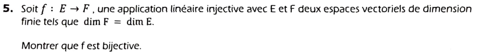
Preuve.
- Noyau. \(f\) injective \(\iff\ker f=\{0_E\}\), donc \(\dim\ker f=0\).
- Théorème du rang : \(\dim\operatorname{Im}f=\dim E-0=\dim E\).
- Hypothèse \(\dim F=\dim E\) : \(\dim\operatorname{Im}f=\dim F\).
- Conclusion. \(\operatorname{Im}f\) est un sous-espace de \(F\) de même dimension finie que \(F\), donc \(\operatorname{Im}f=F\) : \(f\) est surjective.
- Injective et surjective : \(f\) est bijective. \(\blacksquare\)
Exercice 1 — Étude locale et asymptote · 2 pts
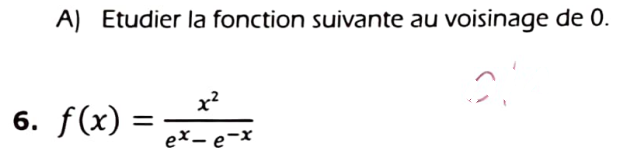
Domaine. \(e^x-e^{-x}=2\operatorname{sh}x=0\iff x=0\). \(f\) est définie sur \(\mathbb R^*\), impaire : \(f(-x)=\dfrac{x^2}{e^{-x}-e^{x}}=-f(x)\).
Étape 1 — DL du dénominateur. \(e^x-e^{-x}=2\operatorname{sh}x=2\Big(x+\dfrac{x^3}{6}+o(x^4)\Big)=2x+\dfrac{x^3}{3}+o(x^4)=2x\Big(1+\dfrac{x^2}{6}+o(x^3)\Big)\).
Étape 2 — Simplifier par \(x\). \[ f(x)=\frac{x^2}{2x\big(1+\frac{x^2}{6}+o(x^3)\big)}=\frac x2\cdot\frac{1}{1+\frac{x^2}6+o(x^3)}. \]
Étape 3 — Inverse. \(\dfrac1{1+w}=1-w+o(w)\) avec \(w=\dfrac{x^2}{6}+o(x^3)\), donc \(\dfrac{1}{1+w}=1-\dfrac{x^2}{6}+o(x^2)\). Alors \[ f(x)=\frac x2\Big(1-\frac{x^2}6+o(x^2)\Big)=\frac x2-\frac{x^3}{12}+o(x^3). \]
- Limite : \(\displaystyle\lim_{x\to0}f(x)=0\) ; on prolonge \(f\) par continuité en posant \(f(0)=0\).
- Dérivabilité / tangente : \(f(x)=\frac x2+o(x)\), donc \(f'(0)=\frac12\) et la tangente en 0 est \(T:\ y=\dfrac x2\).
- Position : \(f(x)-\dfrac x2=-\dfrac{x^3}{12}+o(x^3)\sim-\dfrac{x^3}{12}\). Pour \(x<0\) c'est \(>0\) : la courbe est au-dessus de la tangente ; pour \(x>0\) c'est \(<0\) : elle est en dessous. La tangente traverse la courbe : point d'inflexion en 0 (cohérent avec la parité de \(f\)).
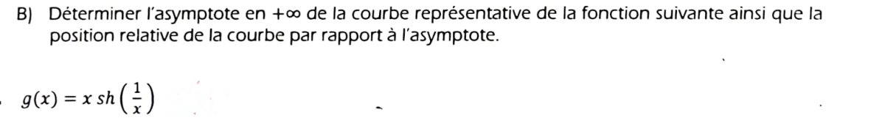
Cadre. On pose \(u=\dfrac1x\). Quand \(x\to+\infty\), \(u\to0^+\). Alors \(g(x)=\dfrac{\operatorname{sh}u}{u}\).
DL. \(\operatorname{sh}u=u+\dfrac{u^3}{6}+o(u^3)\), donc \(\dfrac{\operatorname{sh}u}{u}=1+\dfrac{u^2}{6}+o(u^2)\), soit \[ g(x)=1+\frac{1}{6x^2}+o\!\Big(\frac1{x^2}\Big)\qquad(x\to+\infty). \]
- \(g(x)\to1\) : asymptote horizontale d'équation \(y=1\) en \(+\infty\).
- \(g(x)-1\sim\dfrac{1}{6x^2}>0\) : la courbe est au-dessus de son asymptote au voisinage de \(+\infty\).
Contrôle. \(x=10\) : \(10\operatorname{sh}(0{,}1)=10\times0{,}100166=1{,}00167\) ; \(1+\frac{1}{600}=1{,}00167\). ✔
Exercice 2 — L'équation \(\tan x=x\) · 4 pts
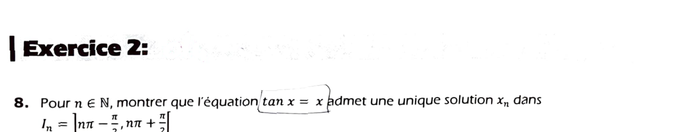
Cadre. Fixons \(n\in\mathbb N\). Sur \(I_n=\left]n\pi-\frac\pi2,\,n\pi+\frac\pi2\right[\), \(\tan\) est définie et de classe \(\mathcal C^1\). On pose \(\varphi(x)=\tan x-x\).
Dérivée. \(\varphi'(x)=1+\tan^2x-1=\tan^2x\ge0\), et \(\varphi'(x)=0\iff\tan x=0\iff x=k\pi\). Dans \(I_n\), le seul multiple de \(\pi\) est \(n\pi\). Donc \(\varphi'\ge0\) avec un seul zéro isolé : \(\varphi\) est strictement croissante sur \(I_n\).
Limites aux bornes. \(\tan\) est \(\pi\)-périodique et \(\tan\to-\infty\) en \(-\frac\pi2^+\), \(+\infty\) en \(\frac\pi2^-\). Donc \[ \lim_{x\to(n\pi-\pi/2)^+}\varphi(x)=-\infty,\qquad \lim_{x\to(n\pi+\pi/2)^-}\varphi(x)=+\infty. \]
Conclusion. \(\varphi\) est continue, strictement croissante sur \(I_n\) et réalise une bijection de \(I_n\) sur \(\mathbb R\) (théorème de la bijection). Comme \(0\in\mathbb R\), l'équation \(\varphi(x)=0\), c'est-à-dire \(\tan x=x\), a exactement une solution \(x_n\in I_n\).
Étape 1. \(x_n\in I_n\iff n\pi-\frac\pi2\lt x_n\lt n\pi+\frac\pi2\iff-\frac\pi2\lt x_n-n\pi\lt\frac\pi2\). Posons \(y_n=x_n-n\pi\in\left]-\frac\pi2,\frac\pi2\right[\).
Étape 2 — périodicité. \(\tan\) est \(\pi\)-périodique : \(\tan y_n=\tan(x_n-n\pi)=\tan x_n=x_n\) (par définition de \(x_n\)).
Étape 3 — \(\arctan\) inverse de \(\tan\) sur \(\left]-\frac\pi2,\frac\pi2\right[\). Comme \(y_n\) est dans cet intervalle : \(\arctan(\tan y_n)=y_n\). Donc \(\arctan x_n=\arctan(\tan y_n)=y_n\).
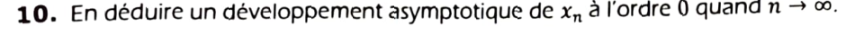
Étape 1 — \(x_n\to+\infty\). \(x_n>n\pi-\frac\pi2\to+\infty\), donc \(x_n\to+\infty\).
Étape 2 — limite de \(\arctan x_n\). \(\arctan t\to\frac\pi2\) quand \(t\to+\infty\), donc \(\arctan x_n\to\frac\pi2\).
Étape 3 — utiliser Q9. \(x_n=n\pi+\arctan x_n=n\pi+\dfrac\pi2+o(1)\).
Lecture de « ordre 0 ». Le terme dominant est \(n\pi\) (c'est ce que dit \(x_n\sim n\pi\)). On donne directement la forme plus précise \(n\pi+\frac\pi2+o(1)\), car c'est elle qui sert à la question suivante.
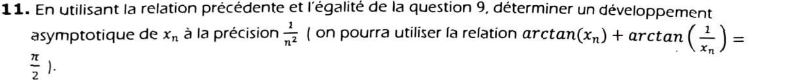
Étape 1 — relation avec \(\frac1{x_n}\). Pour \(x>0\), \(\arctan x+\arctan\frac1x=\frac\pi2\). D'après Q9 : \(x_n-n\pi=\arctan x_n=\dfrac\pi2-\arctan\!\Big(\dfrac1{x_n}\Big)\), soit \[ x_n=n\pi+\frac\pi2-\arctan\!\Big(\frac1{x_n}\Big). \]
Étape 2 — DL d'\(\arctan\). \(\frac1{x_n}\to0\) et \(\arctan t=t-\frac{t^3}{3}+o(t^3)\). Or \(\frac1{x_n}\sim\frac1{n\pi}\), donc \(\left(\frac1{x_n}\right)^3=O\!\left(\frac1{n^3}\right)=o\!\left(\frac1{n^2}\right)\) : \[ \arctan\!\Big(\frac1{x_n}\Big)=\frac1{x_n}+o\!\Big(\frac1{n^2}\Big). \]
Étape 3 — DL de \(\frac1{x_n}\) à la précision \(\frac1{n^2}\). D'après Q10, \(x_n=n\pi+\frac\pi2+o(1)=n\pi\Big(1+\dfrac{1}{2n}+o\!\big(\tfrac1n\big)\Big)\). Donc \[ \frac1{x_n}=\frac1{n\pi}\cdot\frac1{1+\frac1{2n}+o(\frac1n)}=\frac1{n\pi}\Big(1-\frac1{2n}+o\!\Big(\frac1n\Big)\Big)=\frac1{n\pi}-\frac1{2\pi n^2}+o\!\Big(\frac1{n^2}\Big). \]
Étape 4 — assemblage.
Contrôle numérique. Les solutions de \(\tan x=x\) sont \(4{,}4934;\ 7{,}7253;\ 10{,}9041;\ 14{,}0662;\ 17{,}2208\ldots\) Pour \(n=5\) : \(5\pi+\frac\pi2-\frac1{5\pi}+\frac1{50\pi}\approx15{,}7080+1{,}5708-0{,}0637+0{,}0064=17{,}2215\), à comparer à \(x_5\approx17{,}2208\). ✔ (l'écart \(\approx7\cdot10^{-4}\) est de l'ordre de \(1/n^3\)).
- Pour le DL de \(\frac1{x_n}\), il faut le terme \(\frac\pi2\) de \(x_n\) : il donne le \(\frac1{2\pi n^2}\) final. Avec \(x_n\sim n\pi\) seulement, on perdrait ce terme.
- Le signe : \(x_n=n\pi+\frac\pi2-\arctan(\frac1{x_n})\), donc \(-\frac1{n\pi}\) puis \(+\frac{1}{2\pi n^2}\) (le \(-\) de l'inverse devient \(+\) devant).
Exercice 3 — Supplémentaires et projection dans \(\mathbb R^3\) · 2 pts
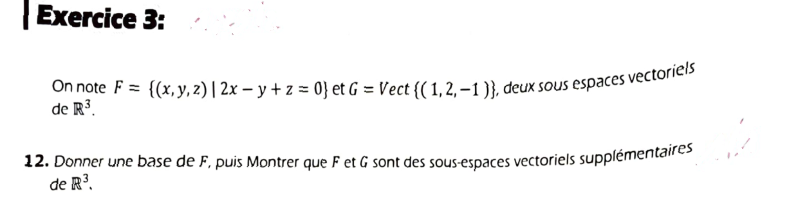
Base de \(F\). \(F=\{(x,y,z)\mid z=y-2x\}\). Tout vecteur de \(F\) s'écrit \[ (x,\,y,\,y-2x)=x\,(1,0,-2)+y\,(0,1,1). \] Donc \(F=\operatorname{Vect}\big((1,0,-2),(0,1,1)\big)\). Les deux vecteurs ne sont pas colinéaires : la famille est libre, donc c'est une base et \(\dim F=2\).
\(G\). \(G=\operatorname{Vect}(w)\) avec \(w=(1,2,-1)\neq0\) : \(\dim G=1\).
\(F\cap G=\{0\}\). Soit \(\lambda w\in F\cap G\). Alors \(2\lambda-2\lambda+(-\lambda)=0\), c'est-à-dire \(-\lambda=0\) : \(\lambda=0\). Donc \(F\cap G=\{0\}\) (la somme est directe). C'est équivalent à \(w\notin F\).
Dimension. \(\dim F+\dim G=2+1=3=\dim\mathbb R^3\).
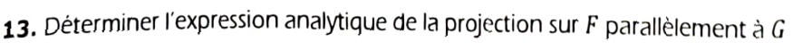
Principe. Pour \(u=(x,y,z)\in\mathbb R^3\) il existe un unique couple \((v,\omega)\in F\times G\) tel que \(u=v+\omega\), et \(p(u)=v\). Comme \(\omega\in G\), \(\omega=\lambda w=(\lambda,2\lambda,-\lambda)\). Alors \(v=u-\lambda w\).
Condition \(v\in F\). \(v=(x-\lambda,\;y-2\lambda,\;z+\lambda)\) doit vérifier \(2v_1-v_2+v_3=0\) : \[ 2(x-\lambda)-(y-2\lambda)+(z+\lambda)=0\iff 2x-y+z+\lambda(-2+2+1)=0\iff\lambda=-(2x-y+z)=y-2x-z. \]
Calcul de \(v\). \[ \begin{aligned} x-\lambda&=x-(y-2x-z)=3x-y+z,\\ y-2\lambda&=y-2y+4x+2z=4x-y+2z,\\ z+\lambda&=z+y-2x-z=-2x+y. \end{aligned} \]
Vérifications. \(p(w)=p(1,2,-1)=(3-2-1,\,4-2-2,\,-2+2)=(0,0,0)\) ✔ (\(G=\ker p\)) ; \(p(1,0,-2)=(1,0,-2)\) ✔ et \(p(0,1,1)=(0,1,1)\) ✔ (\(F\) fixé) ; et \(p\circ p=p\) (vérifié sur la matrice).
Exercice 4 — Un endomorphisme de \(\mathbb R_2[X]\) · 6 pts
\(f(P)=2(X+1)P-(X^2-2X+1)P'=2(X+1)P-(X-1)^2P'\), pour \(P\in\mathbb R_2[X]\).
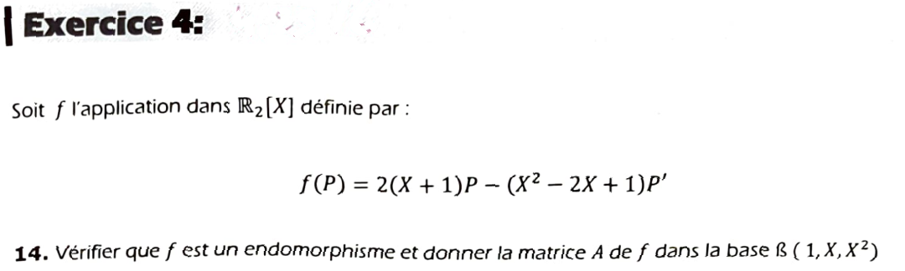
Linéarité. Pour \(P,Q\in\mathbb R_2[X]\) et \(\lambda\in\mathbb R\) : \((\lambda P+Q)'=\lambda P'+Q'\), donc \[ f(\lambda P+Q)=2(X+1)(\lambda P+Q)-(X-1)^2(\lambda P'+Q')=\lambda f(P)+f(Q). \]
Stabilité : \(f(P)\in\mathbb R_2[X]\). Il suffit de calculer l'image de la base (par linéarité, \(f(a+bX+cX^2)=af(1)+bf(X)+cf(X^2)\)) :
- \(f(1)=2(X+1)\cdot1-(X-1)^2\cdot0=2+2X\).
- \(f(X)=2(X+1)X-(X-1)^2\cdot1=2X^2+2X-(X^2-2X+1)=X^2+4X-1\).
- \(f(X^2)=2(X+1)X^2-(X-1)^2\cdot2X=2X^3+2X^2-2X(X^2-2X+1)=2X^3+2X^2-2X^3+4X^2-2X=6X^2-2X\).
Les termes en \(X^3\) s'annulent dans \(f(X^2)\) : les trois images sont dans \(\mathbb R_2[X]\), donc \(f(P)\in\mathbb R_2[X]\) pour tout \(P\). Ainsi \(f\in\mathcal L(\mathbb R_2[X])\) est un endomorphisme.
Matrice. Les colonnes sont les coordonnées de \(f(1),f(X),f(X^2)\) dans \((1,X,X^2)\) : \(f(1)=(2,2,0)\), \(f(X)=(-1,4,1)\), \(f(X^2)=(0,-2,6)\).
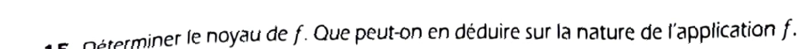
Noyau. Soit \(P=a+bX+cX^2\in\ker f\). Ses coordonnées vérifient \(A\begin{pmatrix}a\\b\\c\end{pmatrix}=0\) : \[ \begin{cases}2a-b=0\\ 2a+4b-2c=0\\ b+6c=0\end{cases} \] De la 1ʳᵉ : \(b=2a\) ; de la 3ᵉ : \(c=-\dfrac b6=-\dfrac a3\). La 2ᵉ donne \(2a+8a+\dfrac{2a}{3}=\dfrac{32}{3}a=0\), donc \(a=0\), puis \(b=0\), \(c=0\).
\(\ker f=\{0\}\). (Cohérent avec \(\det A=2\cdot26+12=64\neq0\).)
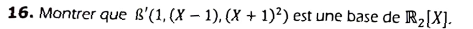
Coordonnées dans \(\mathcal B\). \(1=(1,0,0)\) ; \(X-1=(-1,1,0)\) ; \((X+1)^2=1+2X+X^2=(1,2,1)\). On note \(P\) la matrice dont les colonnes sont ces coordonnées : \[ P=\begin{pmatrix}1&-1&1\\0&1&2\\0&0&1\end{pmatrix}. \]
Méthode 1 (déterminant). \(P\) est triangulaire supérieure : \(\det P=1\cdot1\cdot1=1\neq0\). Les 3 vecteurs forment donc une famille libre de 3 vecteurs dans un espace de dimension 3 : c'est une base.
Méthode 2 (degrés étagés). Les polynômes ont pour degrés \(0,1,2\) : une famille de polynômes non nuls de degrés deux à deux distincts est libre, et \(\dim\mathbb R_2[X]=3\).
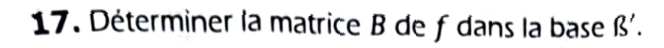
Formule de changement de base. Avec \(P=P_{\mathcal B\to\mathcal B'}\) (coordonnées de \(\mathcal B'\) dans \(\mathcal B\)) : \[ B=\operatorname{Mat}_{\mathcal B'}(f)=P^{-1}AP. \]
Inverse de \(P\). Par remontée (matrice triangulaire) : \[ P^{-1}=\begin{pmatrix}1&1&-3\\0&1&-2\\0&0&1\end{pmatrix}\quad(\text{vérification : }P^{-1}P=I_3). \]
Calcul. \[ AP=\begin{pmatrix}2&-1&0\\2&4&-2\\0&1&6\end{pmatrix}\begin{pmatrix}1&-1&1\\0&1&2\\0&0&1\end{pmatrix}=\begin{pmatrix}2&-3&0\\2&2&8\\0&1&8\end{pmatrix}, \] \[ B=P^{-1}(AP)=\begin{pmatrix}1&1&-3\\0&1&-2\\0&0&1\end{pmatrix}\begin{pmatrix}2&-3&0\\2&2&8\\0&1&8\end{pmatrix}=\begin{pmatrix}4&-4&-16\\2&0&-8\\0&1&8\end{pmatrix}. \]
Vérification directe (colonne par colonne, sans matrice).
- \(f(1)=2+2X=4\cdot1+2\,(X-1)\) : colonne \((4,2,0)\) ✔.
- \(f(X-1)=f(X)-f(1)=X^2+4X-1-2-2X=X^2+2X-3=(X+1)^2-4\) : colonne \((-4,0,1)\) ✔.
- \(f((X+1)^2)=f(X^2)+2f(X)+f(1)=8X^2+8X=8(X+1)^2-8(X-1)-16\) : colonne \((-16,-8,8)\) ✔.
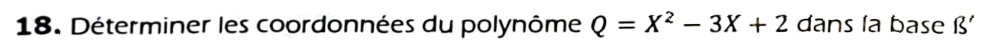
Coordonnées dans \(\mathcal B\). \(Q=2\cdot1-3\cdot X+1\cdot X^2\) : \([Q]_{\mathcal B}=\begin{pmatrix}2\\-3\\1\end{pmatrix}\).
Changement de base. \([Q]_{\mathcal B'}=P^{-1}[Q]_{\mathcal B}\) : \[ \begin{pmatrix}1&1&-3\\0&1&-2\\0&0&1\end{pmatrix}\begin{pmatrix}2\\-3\\1\end{pmatrix}=\begin{pmatrix}2-3-3\\-3-2\\1\end{pmatrix}=\begin{pmatrix}-4\\-5\\1\end{pmatrix}. \]
Vérification. \(-4-5(X-1)+(X^2+2X+1)=-4-5X+5+X^2+2X+1=X^2-3X+2\) ✔.
Bilan — réponses finales
| Question | Réponse |
|---|---|
| QCM 1 / 2 / 3 / 4 | E · E · D · A |
| Q5 (cours) | \(\ker f=\{0\}\Rightarrow\dim\operatorname{Im}f=\dim E=\dim F\Rightarrow\operatorname{Im}f=F\) |
| Q6 | \(f(x)=\frac x2-\frac{x^3}{12}+o(x^3)\) ; \(f(0)=0\), tangente \(y=\frac x2\), inflexion en 0 |
| Q7 | \(g(x)=1+\frac{1}{6x^2}+o(\frac1{x^2})\) ; asymptote \(y=1\), courbe au-dessus |
| Q8 / Q9 | unique \(x_n\in I_n\) (\(\varphi'=\tan^2x\ge0\), limites \(\mp\infty\)) ; \(\arctan x_n=x_n-n\pi\) |
| Q10 / Q11 | \(x_n=n\pi+\frac\pi2+o(1)\) ; \(x_n=n\pi+\frac\pi2-\frac1{n\pi}+\frac1{2\pi n^2}+o(\frac1{n^2})\) |
| Q12 | base \((1,0,-2),(0,1,1)\) ; \(F\cap G=\{0\}\), \(2+1=3\) |
| Q13 | \(p(x,y,z)=(3x-y+z,\ 4x-y+2z,\ -2x+y)\) |
| Q14 | \(A=\begin{pmatrix}2&-1&0\\2&4&-2\\0&1&6\end{pmatrix}\) |
| Q15 | \(\ker f=\{0\}\) ⇒ automorphisme |
| Q16 / Q17 / Q18 | \(\det P=1\) ; \(B=\begin{pmatrix}4&-4&-16\\2&0&-8\\0&1&8\end{pmatrix}\) ; \([Q]_{\mathcal B'}=(-4,-5,1)^T\) |
- Équivalents : ils se multiplient, se divisent, se mettent à une puissance ; jamais de somme ni de différence (écrire \(f-g=(f-1)+(1-g)\) ou factoriser).
- Étude locale : DL jusqu'au premier terme non nul après la droite (tangente \(\Rightarrow\) position), ici l'ordre 3 car le terme en \(x^2\) est nul.
- Suite définie par une équation : bijection sur chaque intervalle (monotonie + limites aux bornes), puis \(x_n=\text{terme principal}+\text{correction}\) par injection successive.
- Projection sur \(F\) // \(G\) : \(u=v+\lambda w\), imposer \(v\in F\) pour trouver \(\lambda\).
- Changement de base : \(B=P^{-1}AP\) avec \(P\) = coordonnées de la nouvelle base dans l'ancienne ; \([u]_{\mathcal B'}=P^{-1}[u]_{\mathcal B}\).
📂 Documents donnés
Sujet du DS1 tel qu'il figure sur le scan reçu (énoncés nettoyés).
DS1 — 11/10/2025
Les copies scannées annotées (nom et notes d'un autre étudiant) restent en local et ne sont pas publiées : les énoncés ci-dessus sont reconstitués à partir de découpes nettoyées.